Fast keys
The D-pad, volume and channels go over the Android TV Remote protocol, so a press lands before your thumb is off the screen.
Tensof milliseconds, press to TV

A quick, ad-free phone remote for Sony Bravia TVs. It talks to the TV over your home network only, so every press lands at once and nothing leaves the house.
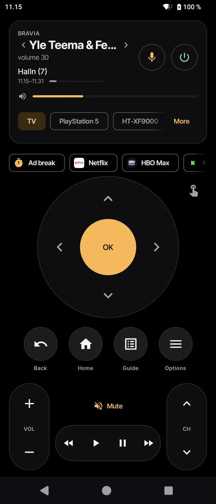
Everything the plastic remote does, without aiming it at the TV, plus the bits it never could.
The D-pad, volume and channels go over the Android TV Remote protocol, so a press lands before your thumb is off the screen.
Tensof milliseconds, press to TV
The card shows what's on and the volume. Swipe it for the next channel, and jump back to the previous one with a tap. When the commercials start, tap Ad break: the sound goes off and comes back by itself.
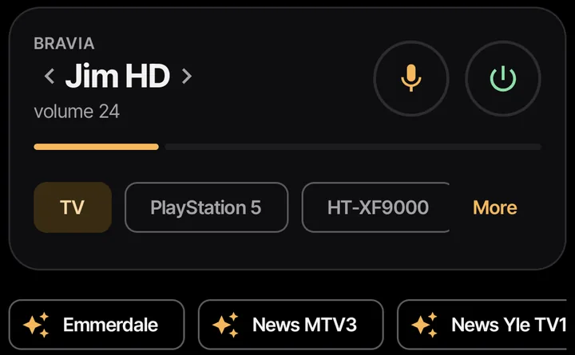
Swipe to move, tap for OK. Rest your finger after a swipe and it keeps moving.
Type or dictate into the TV's search, or just say it.
Voice commands in Finnish and English. The whole app is in both, too, and you can pick either, whatever your phone's language.
Inputs and installed apps with their icons, and the full channel list. Long-press an app to pin it under the remote as a one-tap button.
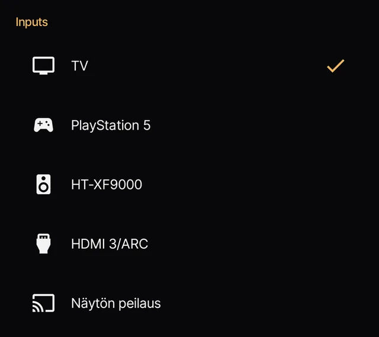
The phone's volume buttons change the TV volume while the app is open. Pinned apps also show up when you long-press the Sohva icon on your home screen.

This is the real weekday of the family that made the app. Three scenes switch channels at the right times while the TV is on; the sleep timer and wake-up handle both ends of the day, even with the app closed.
A scheduled scene never turns the TV on by itself. If nobody is watching at 20.30, the TV stays off.
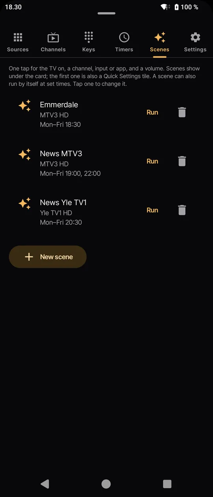
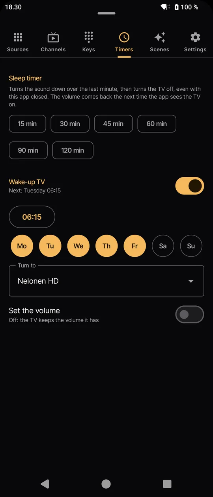
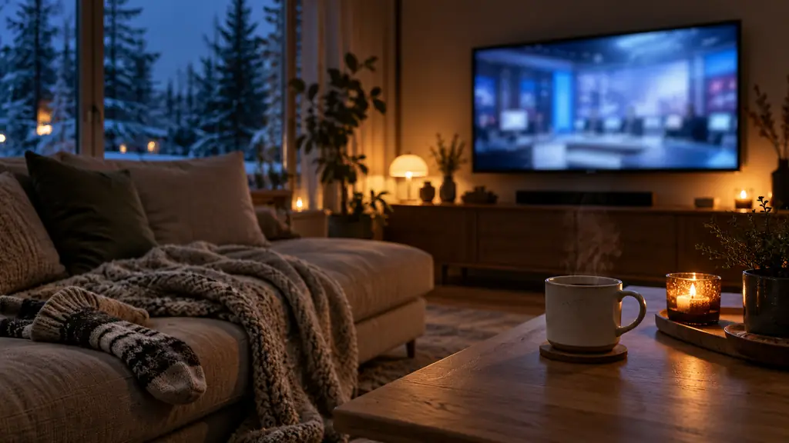
Wake-up turns the TV on at a set time, to the channel and volume you picked, even with the app closed. The coffee is still your job.
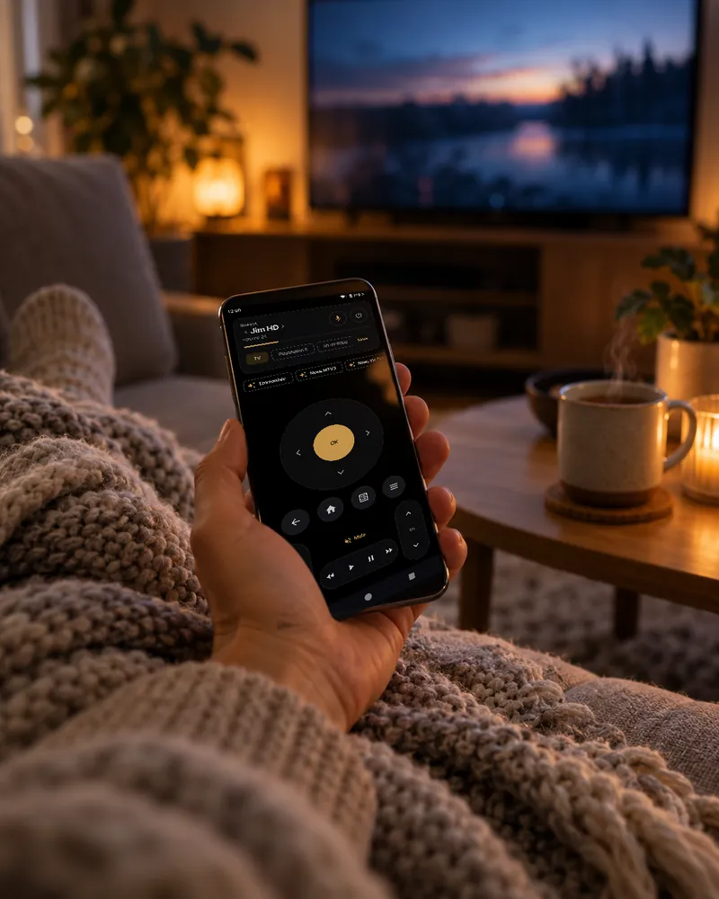
Turn the tablet on its side and the inputs, channels, timers and scenes stay open beside the remote. Held upright, they sit between the channel card and the remote. The buttons keep their phone size, so your thumb still finds them.
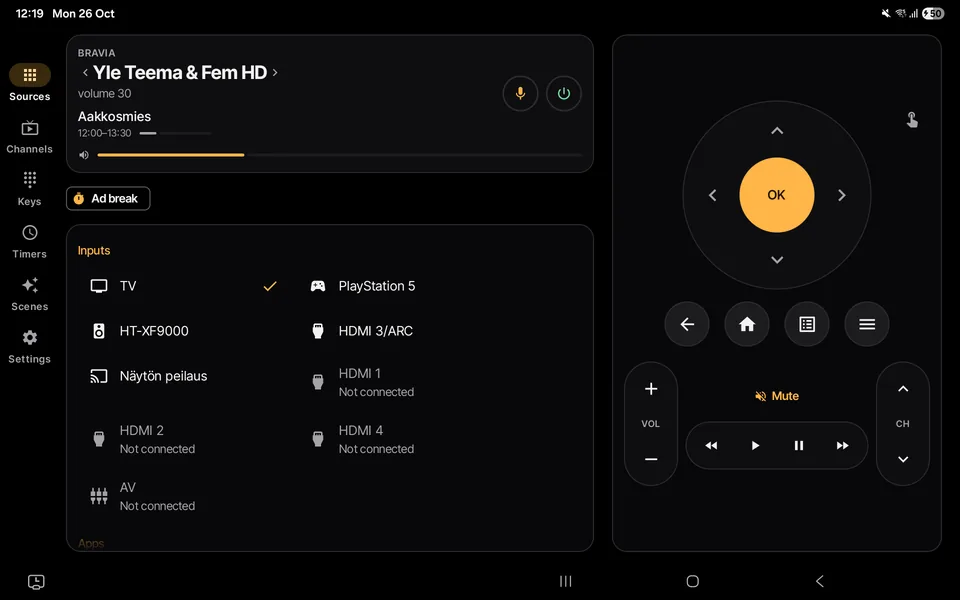
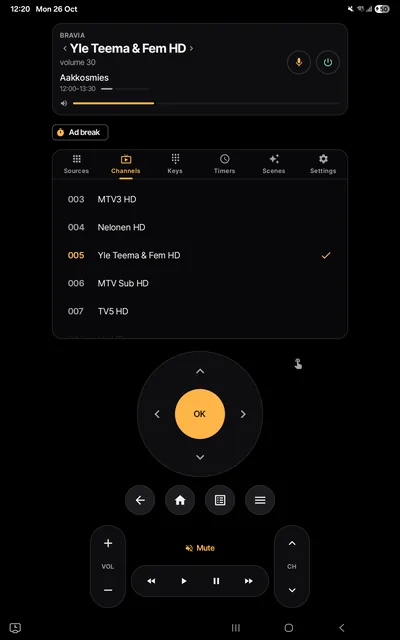
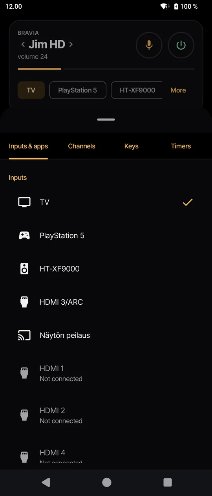
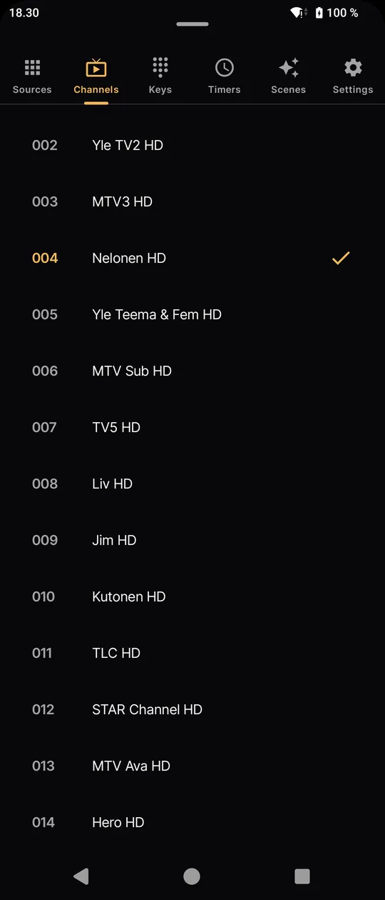
Most remote apps make you sit through an ad to turn the volume down. Sohva Remote has no ads, no account and no servers of its own. The phone talks to the TV, and that's it.
The details are in the privacy policy (suomeksi).
It's coming to Google Play, for Android 8.0 or newer.
On the TV: Settings › Network & Internet › Remote start, so the app can switch the TV on. Pairing itself needs no setting.
Install Sohva Remote from Google Play once it's out, or build it yourself from the source with ./gradlew assembleRelease.
Open the app on the same Wi-Fi. It finds the TV; type the PIN the TV shows.
The short answers to what people ask first.
It's built and tested on a Sony KD-65XF9005 with Android TV. Other Bravia TVs with IP control should work too.
Usually nothing: open the app and type the PIN the TV shows. Turn on Settings › Network & Internet › Remote start so the app can switch the TV on. If the TV refuses the app, Remote device settings › Control remotely must be On, and the app walks you there even without the TV's remote.
Yes. There are no ads and no paywall: every feature is there from the first launch.
No. The phone talks to the TV directly over your home network, so both need to be on the same Wi-Fi. Nothing goes through the internet, which is also why it's fast.
Yes. On a tablet on its side, the inputs, channels, timers and scenes stay open beside the remote; held upright, they sit between the channel card and the remote. The remote keeps the size it has on a phone.
It's on its way. It will install on Android 8.0 or newer.
No. Sohva Remote is an independent app made by Moth & Gravel. It isn't made by or affiliated with Sony. "Sohva" is Finnish for sofa.
Only what it needs to reach your TV, kept on the phone: the TV's address, the pairing keys and your settings. See the privacy policy.